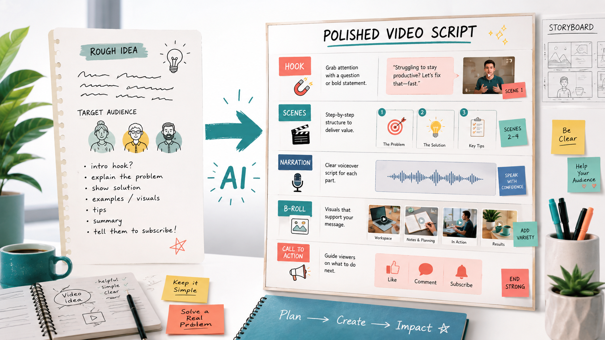

Промтзилла
Сценарий для ролика лучше начинать с цели и зрителя: тогда ИИ не пишет абстрактную лекцию, а собирает понятный путь от хука к выводу.

Пошаговая инструкция
- 1Опиши тему, аудиторию и цель ролика.
- 2Укажи длительность и площадку: Shorts, Reels, YouTube, обучающее видео.
- 3Попроси несколько вариантов хука.
- 4Собери сценарий по блокам: кадр, текст, визуал, звук.
- 5Попроси убрать воду и сделать речь разговорной.
Какой результат просить
Хороший сценарий содержит не только текст диктора, но и визуальные действия, монтажные подсказки и финальный призыв. Для старта можно использовать Study24 AI: добавь исходник, цель и ограничения, а затем попроси вариант для публикации.
Промт
RU
Напиши сценарий для видео. Тема: [тема] Аудитория: [для кого] Цель: [что зритель должен понять или сделать] Длительность: [30 секунд / 1 минута / 5 минут] Площадка: [YouTube / Shorts / Reels / другое] Сделай: — 5 вариантов хука; — структуру ролика; — сценарий по блокам: кадр, текст диктора, визуал, звук; — идеи b-roll; — финальный призыв к действию. Пиши живым разговорным языком, без воды и канцелярита.
EN
Write a video script. Topic: [topic] Audience: [who it is for] Goal: [what viewers should understand or do] Duration: [30 seconds / 1 minute / 5 minutes] Platform: [YouTube / Shorts / Reels / other] Create: — 5 hook options; — video structure; — block-by-block script: shot, narration, visual, sound; — b-roll ideas; — final call to action. Use natural conversational language, no fluff or bureaucratic phrasing.
Важно
После генерации прочитай сценарий вслух: текст, который хорошо выглядит на экране, может звучать деревянно в речи.
Теги